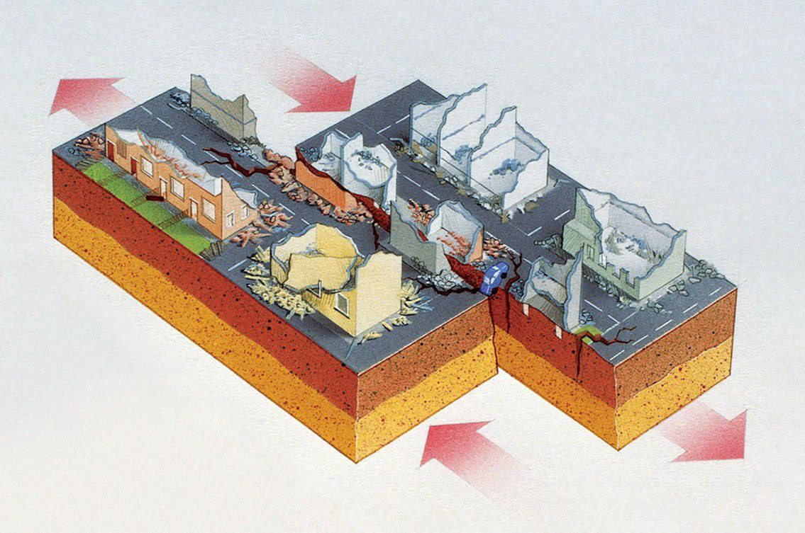

EARTHQUAKE
You feel the ground suddenly shake, and nearby objects are trembling. An earthquake is happening. They happen millions of times a year, but most are so small people don't even feel them. But powerful earthquakes can cause landslides, tsunamis, flooding, and other dangerous events.

The Earth's crust is broken into tectonic plates that slowly move on top of the semi-fluid mantle. At plate boundaries, stress builds up as the plates collide, pull apart, or slide past each other. Rocks along faults get stuck due to friction, deforming elastically and storing energy like a stretched spring. When the stress becomes too great, the rocks suddenly slip, releasing the stored energy as seismic waves. These waves travel through the Earth, causing the shaking and surface damage we experience as an earthquake.